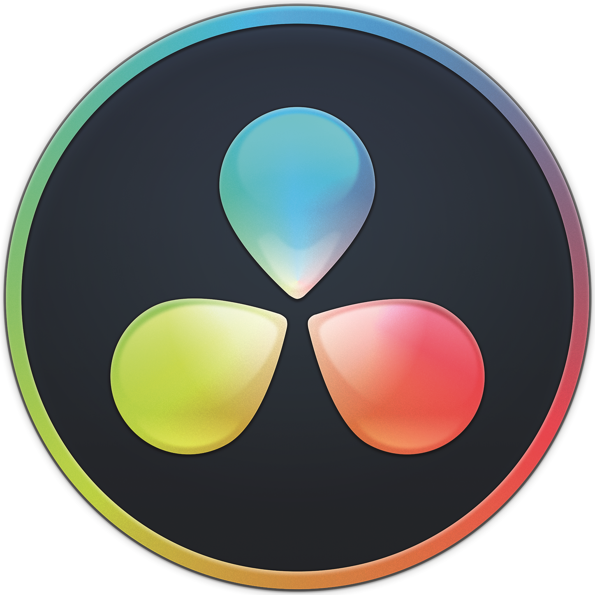

使用しているソフト一覧
目次
💻
プログラミング / 総合開発環境
Visual Studio Code
📐
3D CAD
Fusion 360
🧊
3D CG
Blender
🔌
電子回路設計
KiCad
🖼️
画像編集
GIMP
🎬
動画編集
DaVinci Resolve
🎵
音楽制作
FL Studio Mobile
分類：プログラミング / 総合開発環境
Visual Studio Code
HTML / CSS / Python / VBA など幅広く使用。
GitHub連携や拡張機能を活用した軽量な開発環境。
公式サイト：
https://code.visualstudio.com/
分類：3D CAD
Fusion 360
機械設計、治具設計、3Dプリント用モデル作成に使用。
パラメトリック設計による高い柔軟性。
公式サイト：
https://www.autodesk.co.jp/products/fusion-360
分類：3D CG
Blender
キャラクターモデリングやアバター制作に使用。
ボーン、シェイプキー、マテリアル設定まで対応。
公式サイト：
https://www.blender.org/
分類：電子回路設計
KiCad
回路図作成、PCB設計に使用。
個人制作レベルでの基板設計に十分対応可能。
公式サイト：
https://www.kicad.org/
分類：画像編集
GIMP
画像編集、背景透過、バナー制作などに使用。
軽快でラフな作業に向いている。
公式サイト：
https://www.gimp.org/

分類：動画編集
DaVinci Resolve
動画編集およびカラーグレーディングに使用。
無料版でも高品質な映像制作が可能。
公式サイト：
https://www.blackmagicdesign.com/products/davinciresolve
分類：音楽制作
FL Studio Mobile
モバイル環境での作曲やアイデアスケッチに使用。
ループ制作や簡易ミックスに適している。
公式サイト：
https://www.image-line.com/fl-studio-mobile/